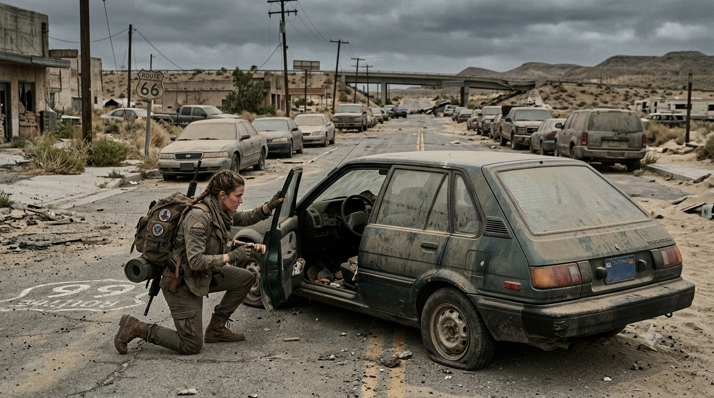
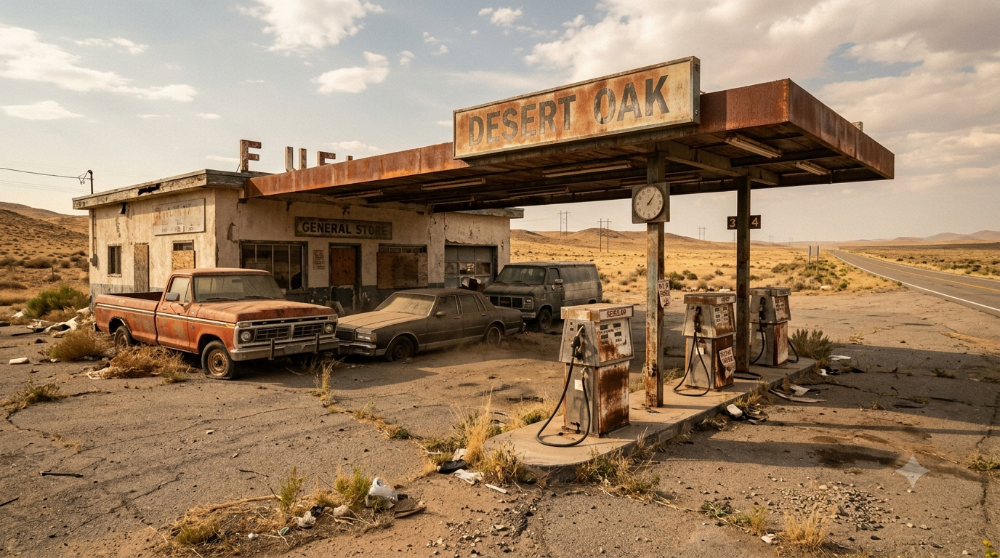
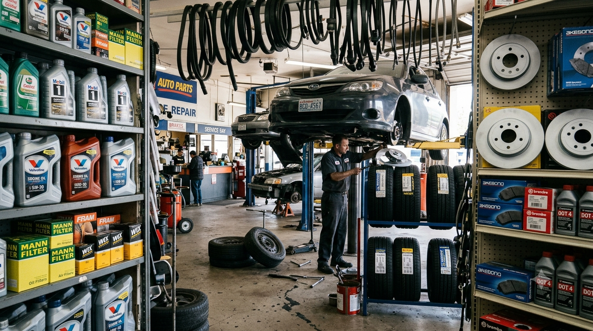
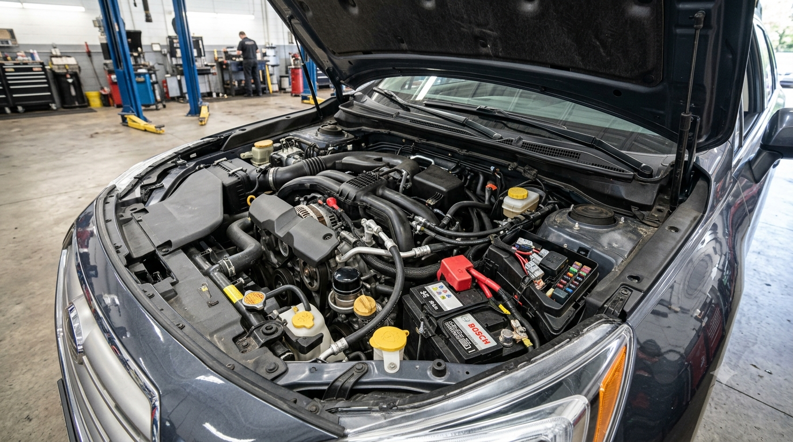
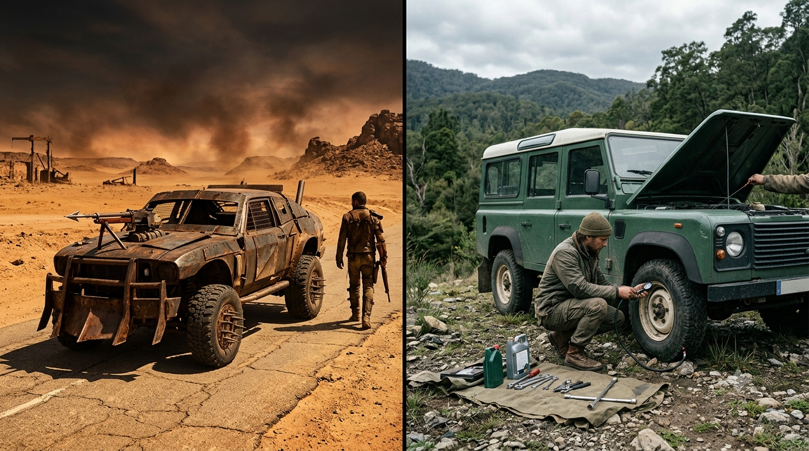

What Apocalypse Movies and Shows Get Wrong About Vehicles

In apocalypse movies, a survivor finds a dusty car, smashes a window, turns the key, and drives away. A few days later, the same vehicle is racing across a wasteland, jumping ditches, escaping armed gangs, and somehow still has fuel. The story moves on, but the car keeps working because the plot needs it to.
Real vehicles are more complicated. They need the right fuel, a healthy battery, working tyres, functioning brakes, fluids, filters, belts, hoses, and dozens of parts that wear out or fail. Even a car that looks perfect can be useless if its fuel has deteriorated, its electronic immobilizer refuses to start, or one critical component has broken and nobody can replace it.
That does not mean every abandoned car would instantly become scrap. Some would run for years with care, and older or simpler vehicles can be easier to repair in certain conditions. The unrealistic part is treating vehicles as dependable, endlessly reusable transport after the systems that manufacture, fuel, service, and repair them have disappeared.
- The movie magic problem
- Fuel does not last forever
- Gas stations need a working system
- Fuel runs out faster than stories suggest
- One fuel does not suit every engine
- The alcohol-fuel myth
- Cars still need regular maintenance
- Batteries and electronics are weak links
- Tyres can fail even when parked
- Finding the right spare part
- Off-road vehicles are not unstoppable
- What about electric vehicles?
- Which vehicles make sense?
- How apocalypse stories handle vehicles
- What a realistic survivor would look for
- The real lesson
The Movie Magic Problem: A Car Is More Than Four Wheels
Vehicles are brilliant storytelling tools. They let characters travel, escape, carry supplies, make dramatic entrances, and get stranded at the worst possible moment. A movie cannot spend ten minutes explaining a fuel filter, so the machine often behaves exactly as the scene requires.
That is understandable in an action story. It becomes less convincing when a show wants us to believe that society has been gone for years, yet survivors travel long distances in a steady stream of working cars with little visible maintenance. Modern vehicles are products of enormous supply networks. They depend on mining, chemical production, refineries, electricity, transport, precision manufacturing, computer systems, rubber production, and specialist repair work.
A working car might outlast the society that built it. Keeping a large fleet working indefinitely is another matter. Every journey adds wear; every tyre puncture, damaged belt, failed sensor, cracked hose, and empty fuel tank creates a new problem. After enough time, survivors would not simply choose from a world full of ready-to-drive cars. They would be choosing from an ever-shrinking pool of vehicles that are still useful—or stripping dead ones for parts.
1. Fuel Does Not Last Forever
One of the biggest shortcuts in apocalypse fiction is finding a car with fuel in the tank and treating that fuel as if it has been preserved in amber. Petrol and diesel can be stored, but neither is immune to time, temperature, air, water, or contamination.
Gasoline contains volatile components that can evaporate, while oxidation can form gums and deposits. Depending on the blend and storage conditions, fuel quality can deteriorate enough to cause starting or running problems; ASTM D525 is a standard test for gasoline oxidation stability and its tendency to form gum during storage. Fuel kept in suitable, sealed storage may last much longer than fuel left in a poorly sealed or vented system, so there is no single expiry date that applies to every tank. A car that has sat abandoned through months of hot weather is not automatically carrying usable petrol just because its gauge reads half-full.
Diesel is different, but it is not magically permanent. Water contamination can encourage microbial growth at the fuel-water interface in storage systems and create sludge or filter-blocking deposits. The U.S. Department of Energy’s Biodiesel Handling and Use Guide discusses water management, microbial contamination, and storage stability. Biodiesel blends can have their own storage-stability issues. Fuel composition, cleanliness, temperature history, tank condition, and time in storage all matter.
That is why a realistic survivor would not trust a fuel gauge alone. The vehicle might have a full tank of old, contaminated fuel—or an empty tank that looks fine from the outside. Fuel is a consumable with a supply problem, not a permanent feature of the landscape.
More realistic: “How old is it, how was it stored, and can the engine run safely on it?”

2. Gas Stations Need a Working System Behind Them
Many stories show survivors driving from one abandoned filling station to another as if the pumps are just waiting to be used. But a fuel station is the final stop in a long chain: crude oil or other feedstock must be processed, fuel must meet a specification, and tanker trucks, storage terminals, roads, and filling equipment must keep working.
Most modern fuel pumps rely on electricity. If the power grid is down, a station may still have fuel in its underground tanks but no ordinary way to dispense it. A station can also have power but no fresh deliveries, or deliveries but damaged pumps, contaminated tanks, or no staff to operate it. One working generator might keep a pump running in some circumstances, but that does not mean every abandoned station can be restarted.
Even if a survivor finds accessible fuel, they need the right kind and quality. Petrol and diesel are not interchangeable. Modern high-pressure fuel systems can be sensitive to contamination, and some diesel engines need fuel meeting specific standards. Mixing unknown leftovers from different tanks is not the reliable shortcut it may appear to be on screen.
A realistic story should treat fuel as a resource that is gradually becoming harder to obtain. It would be rationed, protected, tested where possible, and saved for journeys that truly justify the cost. The end of fuel distribution would change the map long before every last drop had vanished.
3. Fuel Runs Out Faster Than Stories Suggest
A vehicle’s advertised range is measured under defined test conditions. Apocalypse travel is rarely that predictable. Cars may be heavily loaded with people, water, food, tools, and spare parts. Drivers may spend hours idling, crawl through traffic, take long detours around blocked roads, climb steep routes, or repeatedly stop and start.
Those conditions can increase fuel consumption and reduce the distance a vehicle can cover on a tank. A rough route may turn a short distance on the map into a slow, fuel-hungry journey. A chase with hard acceleration and high speeds is even less economical. A vehicle that once managed a particular range in ordinary use may perform very differently when overloaded, damaged, poorly maintained, or driven across difficult terrain.
The useful measure is not simply “How far does it go on a full tank?” It is “How much useful transport can it provide with the fuel we can realistically obtain?” A vehicle that consumes less fuel but cannot carry the necessary load may not be the best choice; nor is a large vehicle worthwhile if most of its capacity is unused.
4. One Fuel Does Not Suit Every Engine
Petrol and diesel engines work differently and require different fuels. Putting diesel into a petrol vehicle, or petrol into a diesel vehicle, can prevent the engine from running and damage parts of the fuel system. The fact that two vehicles both use liquid fuel does not make their fuels interchangeable.
Even vehicles using the same broad fuel category can have different requirements. Octane rating, diesel specification, permitted ethanol content, seasonal fuel properties, and manufacturer requirements all matter. Modern diesel injection systems use high pressures and close tolerances, so contaminated or unsuitable fuel can cause expensive failures. An older engine may be more tolerant in some respects, but “old” does not mean “runs on anything.”
The same principle applies to lubricants and coolants. Engine-oil grades and specifications are not arbitrary labels, and different vehicles may require different coolant chemistry, transmission fluid, brake fluid, and other consumables. A survivor who knows the exact requirements of their vehicle has an advantage over someone who simply collects any liquid that looks useful.
Fiction often treats the engine as a generic machine: add something that burns, turn the key, and go. Real engines are designed around a particular fuel, compression ratio, air-fuel mixture, ignition or injection system, materials, and operating temperatures. Adaptations are possible, but they are not universal or cost-free.
5. The Alcohol-Fuel Myth: You Cannot Pour Any Distilled Alcohol Into Any Car
Alcohol fuels are a good example of a real idea that gets oversimplified. Ethanol can be used in internal-combustion engines, and some cars are specifically designed to run on high-ethanol blends. But a vehicle designed for ordinary petrol is not automatically compatible with any bottle or barrel of alcohol that a survivor might produce.
Flexible-fuel vehicles have fuel-system components designed for ethanol’s chemical properties and a control system calibrated to handle different fuel blends. The U.S. Department of Energy’s Alternative Fuels Data Center explains that high-ethanol fuel such as E85 is intended for flex-fuel vehicles, not ordinary gasoline-only models. Fuel pumps, injection components, seals, hoses, and engine calibration can differ.
Distilled alcohol is not necessarily ready-to-use motor fuel. Its water content, purity, composition, and consistency may be unknown, and it does not have the same energy content or handling characteristics as petrol. A high-ethanol or other alcohol-fuel conversion can require purpose-built or modified equipment; it is not a case of pouring homemade spirit into a random abandoned sedan.
It is also important not to lump all alcohol fuels together. Ethanol and methanol have different properties, and engines or systems designed for one are not automatically compatible with the other. A few specialised or modified engines can operate on particular alcohol fuels, but that is very different from saying that most ordinary cars can.
Could a community eventually make and use an alternative fuel? In principle, yes—if it has the feedstock, water and energy, suitable processing equipment, quality control, storage, compatible engines, and people who understand the process. That is a small industrial operation, not a quick fix for an empty tank.
6. Cars Still Need Regular Maintenance

Apocalypse vehicles often seem to be maintenance-free. Characters drive them for months, through dust and rain, over broken roads, and sometimes into water—then keep going. In reality, a vehicle needs ongoing inspection and replacement of consumable parts. The exact schedule varies by model and use, which is why the owner’s manual matters.
Engine oil and filters
Engine oil lubricates moving parts, helps carry heat away, and holds contaminants in suspension. Over time, it becomes contaminated and its protective properties can decline. Oil and filter changes cannot be postponed forever just because service garages have closed. The appropriate interval depends on the engine, oil specification, driving conditions, and manufacturer guidance. Heavy loads, dusty conditions, frequent idling, and repeated short trips can make life harder on a vehicle.
Coolant, belts, and hoses
Engines need to manage heat. Coolant can age or become contaminated, hoses can crack, and belts can wear or fail. A broken cooling hose or failed drive belt can turn a functioning vehicle into a stranded one. Running an overheating engine in the hope that it will “make it a little farther” can turn a repairable fault into major engine damage.
Brakes, transmission, and steering
Brake fluid, transmission fluid, filters, bearings, suspension joints, steering components, and wheel alignment also matter. A vehicle that starts and moves is not necessarily safe to drive. Rust or damage may affect braking, tyres may be compromised, and a loaded vehicle may behave differently from an empty one.
Routine servicing is not a luxury designed only to keep a car looking new. It helps prevent failures that are far more dangerous when there is no roadside assistance and the nearest safe place may be many kilometres away.
7. Batteries and Electronics Are Weak Links

A lot of abandoned vehicles will have weak or discharged 12-volt batteries. Conventional starter batteries gradually lose performance with age, heat, vibration, and long periods without charging. A car that ran before the collapse might not start after weeks or months parked, especially if its battery was already old or electrical equipment continued drawing power while it stood.
Jump-starting can help with a discharged battery when the battery and the rest of the electrical system are still serviceable. It does not repair a battery that has failed internally, and it is not a permanent substitute for a compatible replacement. The replacement must suit the vehicle’s dimensions, terminals, chemistry, capacity, and starting requirements.
Modern vehicles also depend on electronic control modules, sensors, electric fuel pumps, alarms, and immobilizers. These systems improve safety, efficiency, and convenience, but a damaged connector, failed module, sensor fault, or security-system problem can prevent some vehicles from starting or can limit how they operate. Certain faults require model-specific diagnostics, programming, or replacement parts that may be difficult to obtain.
This does not mean every modern vehicle is unreliable or that an older car is automatically better. Older vehicles can have worn components, corrosion, carburettor faults, and fewer safety features. Modern vehicles can be durable and efficient while parts and diagnostic support remain available. The practical issue is whether the community has the knowledge, tools, and spares for the particular vehicles it keeps.
This section concerns the ordinary low-voltage battery used for starting and vehicle electronics. The large high-voltage battery that powers an electric vehicle’s motor is a different system, discussed below.
8. Tyres Can Fail Even When a Vehicle Is Parked
Tyres are a particularly uncinematic failure. The tread may still look acceptable while the rubber has aged, cracked, or been damaged by heat, sunlight, poor storage, or underinflation. Tyres also lose pressure, suffer punctures, and wear unevenly. A spare is useful only if it fits the wheel, is itself safe to use, and can be mounted with the tools available.
The U.S. National Highway Traffic Safety Administration explains that tyre ageing is affected by use, storage, environmental conditions, and maintenance. Tyres can become more prone to failure as they age, even when tread wear is not the obvious problem. Age limits and replacement advice vary by tyre and vehicle manufacturer, so there is no single age that should be applied to every tyre.
Survivors driving through glass, metal fragments, collapsed buildings, and debris would face a constant risk of punctures and sidewall damage. Overloading or driving quickly over rough ground adds more stress. A flat tyre may be a minor inconvenience where repair shops and recovery services are available; in a remote area without a safe place to stop, a suitable spare, or wheel-changing tools, it can end the journey.
Do not forget the spare tyre. It may have spent years unused in a boot or under a vehicle, but storage does not stop rubber ageing. A vehicle should not be trusted simply because it has four inflated tyres and a spare that looks untouched.
9. “Just Fix It” Is Not a Spare-Parts Strategy
Movie mechanics often solve an impossible problem by opening the bonnet, looking thoughtful, and finding one useful-looking component in a nearby wreck. Salvage can absolutely keep vehicles going, but parts are not universal building blocks.
A belt that looks almost right may have the wrong length or profile. A filter can fit physically but have the wrong specification. Sensors, electronic modules, fuel pumps, injectors, wheel bearings, brake parts, tyres, and transmission components vary by manufacturer, model, year, engine, trim, and even production revision. A part from another car may help—but it may also be incompatible or unsafe.
Some mechanical parts can be repaired, rebuilt, or fabricated by a skilled machinist. That takes tools, materials, measurements, time, and knowledge. Other parts contain specialised electronics or require calibration. A working workshop with a supply of common filters, belts, hoses, fluids, tyres, batteries, and fasteners could extend vehicle life substantially. A lone survivor with one adjustable wrench is not going to recreate an automotive supply chain.
Standardisation would become valuable. A settlement that chooses a small number of common vehicle models can share spare parts and training more easily than a community made up of dozens of unrelated cars, vans, pickups, and motorcycles. The best vehicle might be the one for which the group has spares and a mechanic—not the one with the most horsepower.
10. Off-Road Vehicles Are Not Unstoppable
Big tyres, raised suspension, four-wheel drive, and a powerful engine make great screen imagery, but they do not make a vehicle invincible. Four-wheel drive can help a vehicle put power to the ground; it does not guarantee traction, prevent punctures, shorten braking distance, or make a vehicle immune to getting stuck.
Driving through rubble can damage tyres, suspension arms, steering links, radiators, underbody components, and exhaust systems. Deep water can reach electrical components or the air intake, and mud can hide rocks, holes, and debris. A vehicle that scrapes its underside or punctures its radiator may be stranded even if the engine itself is strong.
Extra armour, huge bumpers, roof racks, oversized tyres, and heavy cargo all add weight. More weight can increase fuel consumption and place additional strain on brakes, suspension, tyres, and drivetrain components. Modified vehicles also need modified or carefully chosen replacement parts. A heavily armoured truck is useful only if it can move, turn, stop, and be repaired.
Roads matter too. A powerful 4x4 cannot drive through every traffic jam, collapsed bridge, narrow alley, or blocked tunnel. Sometimes the most realistic decision is to leave the vehicle, take a bicycle, walk around the obstruction, or avoid the dangerous route entirely.
11. What About Electric Vehicles?
Electric vehicles get treated as either useless once the grid fails or magically perfect because they do not need petrol. Both versions miss the trade-offs.
Battery-electric vehicles have fewer moving parts and fewer routine fluids to change than conventional vehicles, which can be a real advantage. But they still need tyres, brakes, suspension work, and replacement parts. Their batteries age, can lose capacity, and eventually may need specialised repair or replacement. The central question in a long collapse is whether the survivor has a reliable way to recharge.
Public fast chargers may stop working when the grid or the charging network is unavailable. A household solar installation with suitable equipment and storage could charge some EVs, but the setup, power output, weather, location, and time available all matter. A small portable solar panel is not automatically enough to replenish a car battery after a long drive. A vehicle may have a healthy battery and still be stranded with no practical charging option.
EVs could be useful in a community with stable local electricity, solar generation, microgrids, and compatible charging equipment. Petrol or diesel vehicles could be useful where liquid fuel is available and can be stored safely. Neither drivetrain is universally best after collapse. Energy access matters more than the badge on the bonnet.
12. Which Vehicles Make Sense in a Long-Term Collapse?
There is no single ideal apocalypse vehicle. The right choice depends on terrain, climate, distance, load, road access, local fuel or electricity, repair skills, and the parts a community can actually obtain. A practical vehicle is one that matches a job and can be kept running—not necessarily the biggest or most intimidating one.
| Vehicle type | Where it helps | Main trade-off |
|---|---|---|
| Small car or hatchback | Efficient everyday travel, paved roads, and modest loads. | Limited ground clearance and carrying capacity; less suited to rough tracks or heavy cargo. |
| Pickup or van | Moving tools, water, equipment, and supplies; useful for workshops and settlement work. | Often uses more fuel and needs suitable tyres, brakes, suspension, and load management. |
| Four-wheel-drive vehicle | Rough tracks, mud, steep approaches, and places where extra traction is genuinely needed. | Usually heavier and more complex; four-wheel drive does not overcome deep water, soft ground, obstacles, or poor judgement. |
| Motorcycle | Low fuel use, narrow routes, and moving through some traffic or obstructions. | Little carrying capacity, limited weather protection, and much greater exposure to injury and road hazards. |
| Bicycle, handcart, or animal-drawn cart | Short journeys, local deliveries, and moving modest loads without liquid fuel. | Slower, limited by human or animal effort, terrain, weather, and the condition of roads or paths. |
A settlement would probably benefit from a small, standardised fleet rather than trying to keep every abandoned vehicle running. A few common models make it easier to share filters, belts, tyres, tools, training, and repair knowledge. Bicycles, carts, and walking can handle many local journeys while motor vehicles are reserved for heavier loads, emergencies, and longer trips.
13. How Apocalypse Movies and Shows Handle Vehicles
The Walking Dead
The Walking Dead makes fuel scarcity part of the world, especially as characters move between settlements and abandoned vehicles. Yet the wider TV convention still appears: a car may be unusable in one moment and a convenient escape in another, depending on the scene. Realism lies in the condition of each specific vehicle, not simply in whether it has been abandoned.
The Last of Us
The Last of Us often gives vehicles a stronger sense of age, obstruction, and decay. That is closer to the real problem: after years of neglect, a car is not just a hidden source of transport. Its battery, tyres, fuel, hoses, brakes, and electronics may all be questionable. Finding one that runs is possible, but it should feel like a valuable discovery rather than an unlimited resource.
Mad Max
Mad Max understands fuel as a source of power and conflict. Its vehicle culture is intentionally heightened, however: heavily modified machines perform punishing stunts and keep running in conditions that would destroy tyres, suspension, cooling systems, and drivetrains. That is part of the franchise’s style, not a maintenance plan for real-world survivors.
Fallout and other retro-futuristic wastelands
Franchises such as Fallout use distinctive technology and visual design to establish a world. Their vehicles often serve mood, satire, or world-building rather than a strict mechanical simulation. The same is true of many other apocalypse films: a working engine communicates freedom, danger, or status quickly, so the story skips the long list of reasons it might not work.
That is not necessarily a flaw in the entertainment. A series has limited time, and vehicle maintenance is rarely the main subject. The mistake is when viewers assume that a memorable action scene is also a realistic guide to long-term transport after industrial support disappears.

14. What Would a Realistic Survivor Look For?
Before relying on an abandoned vehicle, a sensible survivor would check whether it is safe, supportable, and suitable for the journey—not merely whether the engine starts.
- Fuel or charging: Is the fuel type or charging method compatible, available, and sustainable for the planned route?
- Mechanical condition: Are there leaks, warning lights, unusual noises, corrosion, animal damage, or signs of overheating?
- Road safety: Are the tyres, spare, brakes, steering, suspension, lights, and cooling system in safe condition?
- Support: Are the correct fluids, filters, common spare parts, tools, and repair skills available?
- Suitability: Can it carry the required people and supplies across the actual route without excessive fuel use or damage?
- Failure plan: What happens if it breaks down, gets stuck, or runs out of fuel far from shelter?
A car that has been parked for years should be inspected properly before it is driven. Old fuel, a weak battery, aged tyres, corroded brakes, damaged hoses, or a cooling-system leak can turn an apparently lucky find into a dangerous trap. If its condition is uncertain, do not treat a successful start as proof that it is roadworthy.
Never run an engine in an enclosed or poorly ventilated space. Exhaust contains carbon monoxide, which can cause fatal poisoning without obvious warning.
The Real Lesson: Vehicles Are Useful Until Their Support System Disappears
Apocalypse fiction is right about one thing: a working vehicle can change a survivor’s chances. It can move an injured person, bring supplies to a settlement, or make a dangerous journey possible. But the vehicle is only one part of the transport system. It also needs energy, safe tyres, maintenance, compatible parts, tools, and people who know how to use and repair it.
In the first days of a crisis, a working car may be priceless. Years later, the communities that still have useful transport are more likely to be those that conserve fuel, standardise their fleets, maintain workshops, salvage parts carefully, and use bicycles or walking for journeys that do not justify a motor vehicle. The hardest part may not be finding a car. It may be keeping it useful after the world that supported it has disappeared.
Sources and Further Reading
This article uses general principles that apply broadly to vehicle maintenance, with several technical sources published for U.S. readers. Exact fuel specifications, approved blends, and maintenance schedules vary by vehicle and country, so consult the actual vehicle manufacturer’s guidance for a specific model.
- U.S. Department of Energy — How Do Flexible Fuel Cars Work Using Ethanol? Explains fuel-system components and calibration in flex-fuel vehicles.
- U.S. Department of Energy — Ethanol Blends Describes different ethanol-gasoline blends and which vehicle types can use them.
- The AA — Laying Up and Maintaining Your Car Covers the problems that can arise when a vehicle is left unused, including fuel, battery, tyre, and brake considerations.
- National Highway Traffic Safety Administration — TireWise Explains tyre maintenance, ageing, inspection, and safety.
- AAA — How Long Do Car Batteries Last? Discusses battery ageing, heat, vibration, and the effects of leaving a vehicle unused.
- U.S. Department of Energy — Maintenance and Safety of Electric Vehicles Compares EV maintenance with conventional and hybrid vehicles, and discusses battery ageing.
- U.S. Department of Energy — Electric Vehicles for Consumers Covers charging needs, range, battery life, and maintenance considerations.
- ASTM International — ASTM D525: Oxidation Stability of Gasoline Describes a standard test used to assess gasoline oxidation stability and its tendency to form gum during storage.
- U.S. Department of Energy / National Renewable Energy Laboratory — Biodiesel Handling and Use Guide, Sixth Edition Covers biodiesel storage stability, water contamination, microbial growth, and fuel-quality management.
- India Ministry of Road Transport and Highways — E85/E100 Flex-Fuel Vehicle Rules (26 October 2026) Clarifies that E85/E100 are for vehicles designed and certified for those blends; E20 compatibility alone is not sufficient.
This is an educational analysis of common apocalypse-fiction tropes, not a vehicle repair manual. Fuel compatibility, maintenance procedures, and safety requirements vary by make, model, engine, and country. Never drive a vehicle that has not been checked for basic safety, and never improvise with unknown fuels or fluids.
Suggested Quizzes
Put your survival instincts and apocalypse knowledge to the test.